- Getting Started
- Setting up a native plugin
Setting up a native plugin
Boilerplate native code for implementing a loadable plugin
Environment Setup
The instructions here are tailored for Visual Studio 2017 onwards, for C/C++ development using the SDK library. There may be some differences in earlier versions of Visual Studio (specifically around project generation). There is also an example CMake script, which can be used as a convenient alternative to manual Visual Studio project setup, if desired.
Start a new DLL project
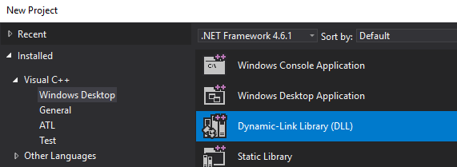
Open the Configuration Manager
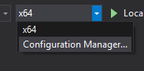
Edit the Active Solution Platforms
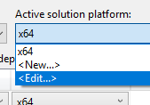
Remove the x86 platform
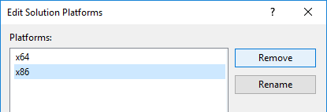
Open the project properties
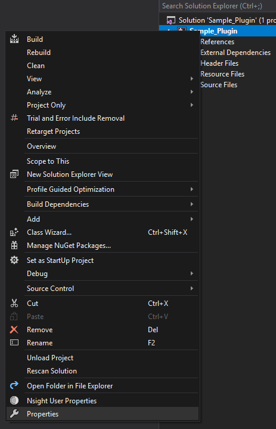
Add C++ Include directory for installed SDK
e.g. C:\Virtalis\Visionary Render 2.1\data\vrtreesdk\include or C:\Virtalis\GeoVisionary 3.1.1\data\vrtreesdk\include
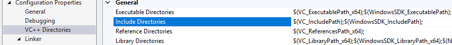
Add Additional Library Directory for installed SDK
e.g. C:\Virtalis\Visionary Render 2.1\data\vrtreesdk\lib\x64 or C:\Virtalis\GeoVisionary 3.1.1\data\vrtreesdk\lib\x64
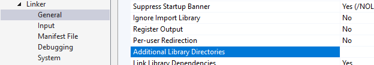
Add vrtree-linker.lib
For Debug configuration:
For Release configuration:
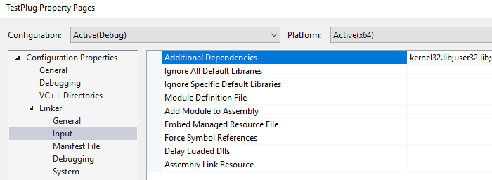
Add a cpp file (e.g. main.cpp)
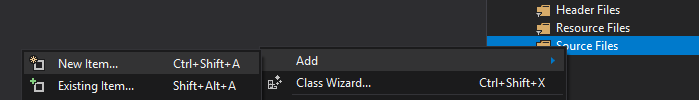
CMakeLists
For CMake users, this project setup can be automated with the following:
# CMakeLists.txt
cmake_minimum_required(VERSION 2.8.11)
set(VRTREE_SDK_DIR "" CACHE STRING "Location of the VRTree SDK")
project(sample_plugin)
include_directories(${VRTREE_SDK_DIR}/include)
link_directories(${VRTREE_SDK_DIR}/lib/x64)
add_library(sample_plugin SHARED main.cpp)
target_link_libraries(sample_plugin vrtree-linker)
Plugin Interface
A native plugin requires a minimum set of entry points in order to be loadable by the plugin manager:
All of these exports should use the cdecl calling convention.
C / C++ Plugins
The helper library is called vrtree-linker and also provides helper macros for implementing plugin entry points.
The following boilerplate code can be used to compile a native plugin starting point. This example makes use of the VRPLUGIN_API_IMPL macro, which handles the boilerplate for hooking into the application log functions and other utilities detailed here.
The
VRInit function is called when the plugin is loaded. The
VRPCleanup function is called when the plugin is unloaded. It is important that the cleanup function correctly removes things added by the plugin. For more information see
Enabling / Disabling plugins at runtime.
Loading a plugin
To instruct the application to load this plugin, do the following:
Find your documents directory. For normal Visionary Render installations, this will usually be Documents/VisionaryRender. For side-by-side installations, it will include the version (e.g. Documents/VisionaryRender-2.1.0);
Inside this directory, create a plugins directory if it does not already exist;
Inside the plugins directory, create a directory named after your plugin. For the above example, call it Sample_Plugin;
Copy your compiled plugin (e.g. Sample_Plugin.dll) into this new directory;
In the same directory, next to the dll, create a plugin.txt file;
Open this file in a text editor, and enter your plugin dll file name (e.g. Sample_Plugin.dll) and save the file.
For the above example, the final directory structure should look something like this:
For more information about other locations where plugins may be located, see Plugin Search Paths.
Verifying a plugin has loaded
Once the plugin is in this location, launch Visionary Render.
Open the settings window (F6), and select the "Plugins" category.
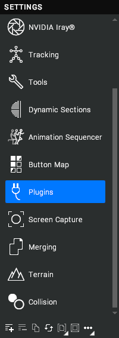
The table displays all loaded plugins and the "Sample Plugin" plugin should be visible here.
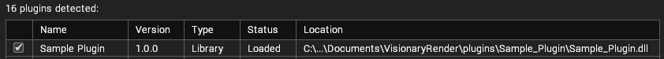
You may also open the Diagnostics window and go to the Log tab. You should also be able to see the "Hello World" log message here.
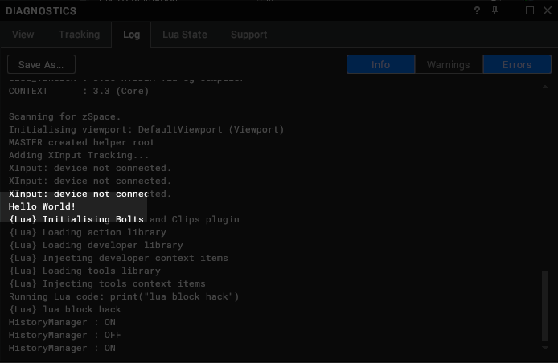
Licensing a plugin
While Visionary Render can load native plugins freely, in order to perform useful operations in the application, it must be granted access to the VRTree API. To do this, it must export a VRPSignature function, providing a license string to unlock the API.
The licenses are issued by Virtalis in the same way as a regular application license, except the contents of the text file are compiled into the plugin.
There are multiple licensing options.
Licensing Options
Local Machine
Site Wide
To get your API licenses, please contact licensing@virtalis.com
Implementation
Once you are given a license text file, it needs to be compiled into the plugin in order to be detected by the plugin loader. Copy the entire contents of the text file into the source code, including the trailing signature (not shown below due to size).
PLUGIN_ENTRY_POINT const char* VRTREE_APIENTRY VRPSignature()
{
return "<VRTREE_API><company>Virtalis</company><user>j.femia</user><feature>Development</feature></VRTREE_API>";
}
Other Languages
It is possible to develop a plugin for Visionary Render using any language that allows you to compile to a dynamically-loadable DLL exporting these entry points. In this case there are no helpers available so you will have to have your plugin dynamically load vrtree.dll and query the entry points specifically. This is covered by Accessing the API